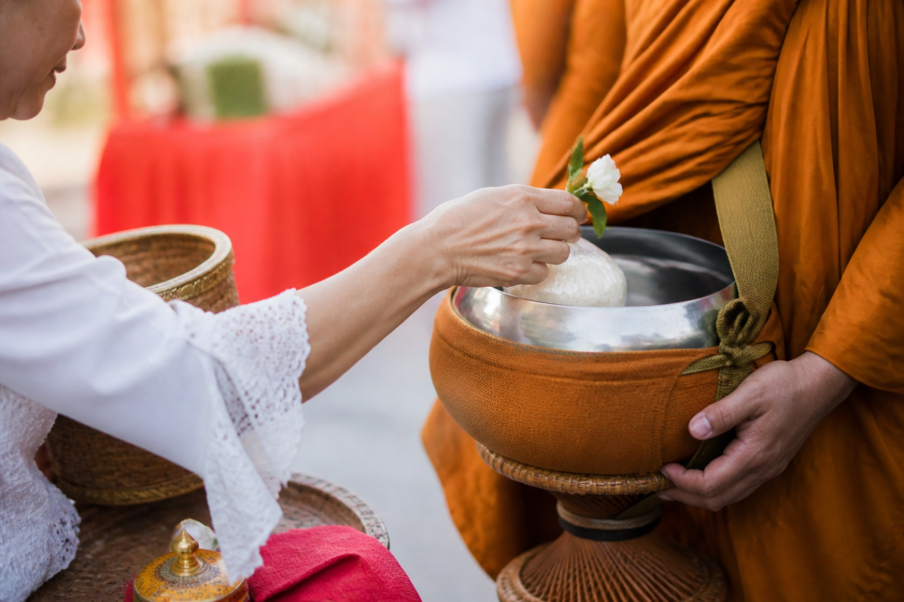

มหาสังฆทานแห่งแผ่นดิน · พุทธศักราช ๒๕๖๙
ตักบาตรพระ
๓ ล้านรูป
๗๗ จังหวัด · ทุกวัดทั่วไทย
ร่วมสืบสานวัฒนธรรมชาวพุทธ ถวายมหาสังฆทานเป็นพุทธบูชา และรวมพลังศรัทธาเพื่อสืบทอดพระพุทธศาสนาให้มั่นคงสืบไป
กำหนดการมหาสังฆทาน
ปฏิทินพิธีตักบาตร
พ.ศ. 2569
ตรวจสอบวัน เวลา และสถานที่จัดพิธีจากปฏิทินกลาง ข้อมูลทั้งหมดแสดงตามเวลาเอเชีย/กรุงเทพฯ และปรับปรุงตามประกาศล่าสุด
แหล่งข้อมูลอ้างอิงหลัก โครงการตักบาตรพระ 3 ล้านรูป 77 จังหวัดทุกวัดทั่วไทย พ.ศ. 2569
กำหนดการสำคัญ
โครงการตักบาตร
ที่กำลังจะมาถึง

สืบสานอริยประเพณี
สืบทอดพระพุทธศาสนา
หลักการและเหตุผล
มหากุศล
เพื่อแผ่นดินธรรม
โครงการตักบาตรพระ 3 ล้านรูป 77 จังหวัดทุกวัดทั่วไทย เปิดโอกาสให้พุทธบริษัทได้ร่วมสั่งสมมหากุศล และสืบสานวัฒนธรรมการตักบาตร ซึ่งเป็นอริยประเพณีอันดีงามของชาวพุทธให้ดำรงมั่นคงสืบไป
ข้าวสารอาหารแห้งส่วนหนึ่งจากศรัทธาของพุทธศาสนิกชนจะรวบรวมนำไปถวายแด่คณะสงฆ์ 323 วัด ในพื้นที่ 4 จังหวัดชายแดนภาคใต้ โครงการดำเนินด้วยความร่วมมือของคณะสงฆ์ ภาครัฐ ภาคเอกชน สถานศึกษา และพุทธศาสนิกชนในทุกภูมิภาค
ริเริ่มการรวมพลังช่วยเหลือคณะสงฆ์และชุมชนในพื้นที่ชายแดนภาคใต้
ขยายสู่โครงการตักบาตรพระ 500,000 รูป ในพื้นที่ทั่วประเทศ
ก้าวสู่โครงการตักบาตรพระ 1 ล้านรูป เชื่อมพลังศรัทธาทุกภูมิภาค
สืบสานโครงการตักบาตรพระ 3 ล้านรูป 77 จังหวัดทุกวัดทั่วไทย
ธรรมเนียมปฏิบัติแห่งงานบุญ
พร้อมกาย
พร้อมใจ
พร้อมสั่งสมบุญ
ข้อปฏิบัติอาจแตกต่างกันตามสถานที่ โปรดตรวจสอบรายละเอียดเฉพาะของแต่ละพิธีจากปฏิทินก่อนเดินทาง
-
01
แต่งกายด้วยชุดสุภาพสีขาว
เลือกเครื่องแต่งกายเรียบร้อย เหมาะสมแก่ศาสนพิธีและสถานที่
-
02
จัดเตรียมไทยธรรมอย่างประณีต
ข้าวสารอาหารแห้งควรสะอาด บรรจุปิดสนิท และสะดวกต่อการรวบรวมส่งต่อ
-
03
เดินทางถึงบริเวณพิธีก่อนเวลา
เผื่อเวลาสำหรับการเดินทาง การเข้าพื้นที่ และการจัดแถวตามคำแนะนำของเจ้าหน้าที่
-
04
สำรวมกาย วาจา และใจ
รักษาความสงบ น้อมถวายไทยธรรมด้วยความเคารพ และระลึกถึงบุญกุศลตลอดพิธี
ศูนย์รวมข่าวสาร พ.ศ. 2569
ประชาสัมพันธ์อย่างเป็นทางการ
ประมวลบุญอย่างสมบูรณ์
รวบรวมบทความตักบาตรปี 2569 จาก DMC.TV และจำแนกข่าวเชิญชวนออกจาก ข่าวประมวลภาพหลังจบพิธีอย่างชัดเจน เพื่อค้นหาและอ้างอิงได้สะดวก
ตรวจสอบและรวบรวมล่าสุด 2 กันยายน 2569